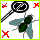
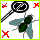

|
0 |
 | 0 0 |
0 |
0 |
0 |
0 |
0 |
|
|
0 |
 | 0 0 |
0 |
0 |
0 |
0 |
0 |
|
This species is endangered, PLEASE DO SOMETHING!!!.
The giant armadillo (Priodontes maximus), colloquially tatou, ocarro,
tatu-canastra or tatú carreta, is the largest living species of armadillo
(although the extinct glyptodonts were much larger). It was once found
widelythroughout the tropical forests of eastern South America and now
ranges throughout varied habitat as far south as northern Argentina.
This species is considered vulnerable to extinction.
The giant armadillo prefers termites and some ants as prey, and often
consumes the entire population of a termite mound. It also has been
known to prey upon worms, larvae and larger creatures, such as spiders
and snakes, and plants. At least one zoo park, in Villavicencio, Colombia
– Los Ocarros – is dedicated to this animal.
For more information, please refer to Wikipedia at
http://en.wikipedia.org/wiki/Priodontes_maximus
Techniques used in this demo:
* Use with camera tracking technique.
* Using sprites.
* Using mathematics to screen positioning.
* Basic engine collisions.
* Detect mouse/touch events in buttons.
* Responsive design.
Made using HTML5 / CSS3 / JavaScript.
* Using Modernizr Modernizr
* Using Jquery. Jquery
Programmed by Juan Carlos Miranda February 2014.
Version 2.0 19/03/2014.
http://otroblogdetecnologias.blogspot.com
Move the Tatu (giant armadillo) with the ARROWS KEYS.
Try to hunt insects with the Tatu.
The insects will try to eliminate you.
Hunt them using the SPACEBAR.
Search a TERERE ICON and a ARMOR ICON and to reinforce your strength
Try to catch a CAR SPEED ICON to increment your speed
Move the Tatu (giant armadillo) with the ARROWS KEYS.
Try to hunt insects with the Tatu.
The insects will try to eliminate you.
Hunt them using the SPACEBAR.
Search a terere icon and a armor icon and to reinforce your strength